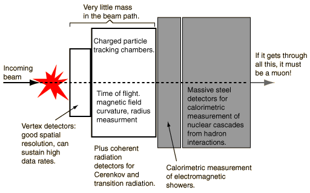

Detection Devices for High Energy Physics
The major accelerator facilities make use of sophisticated and massive arrays of detectors to analyze the particles which are produced in high energy scattering events. Working on our image of high energy physics as being like "finding out how a watch works by smashing two of them together and examining the pieces which fly out", then the detector needs to catch and examine all the pieces. To begin some perspective of how this is done, consider the following possibilities:
- Measuring the position and length of ionization trails. Much of the detection depends upon ionization.
- Measuring time-of-flight permits velocity measurements.
- Measuring radius of curvature after bending the paths of charged particles with magnetic fields permits measurement of momentum.
- Detecting Cerenkov radiation gives some information about energy, mass.
- Measuring the coherent "transition radiation" for particles moving into a different medium.
- Measuring synchrotron radiation for the lighter charged particles when their paths are bent.
- Detecting neutrinos by steps in the decay schemes which are "not there", i.e., using conservation of momentum, etc. to imply the presence of undetected neutrinos.
- Measuring the electromagnetic showers produced by electrons and photons by calorimetric methods
- Measuring nuclear cascades produced by hadrons in massive steel detectors which use calorimetry to characterize the particles.
- "If it got through all that, it must be a muon!" Detecting muons by the fact that they penetrate all the calorimetric detectors.

|
Index
Particle concepts
Search for elementary particles
Reference
Quigg |